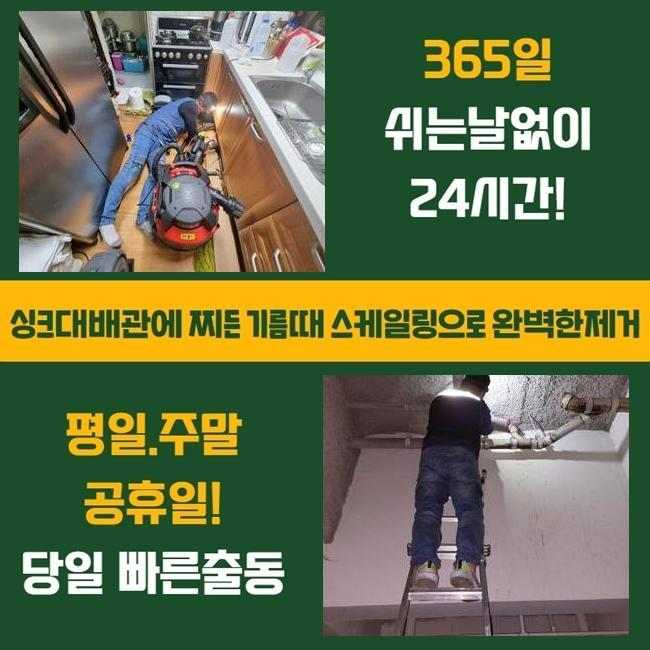
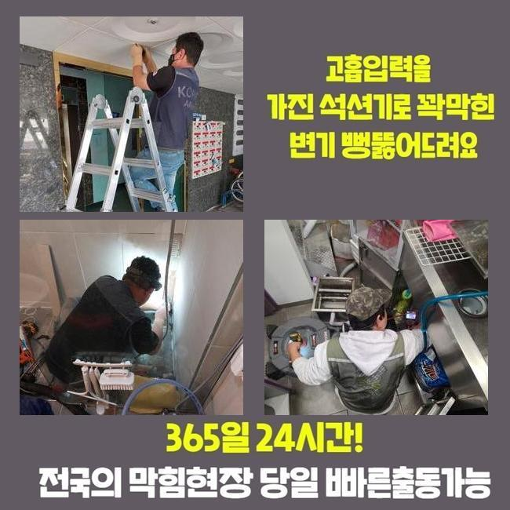
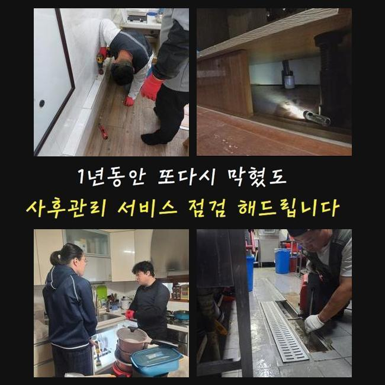
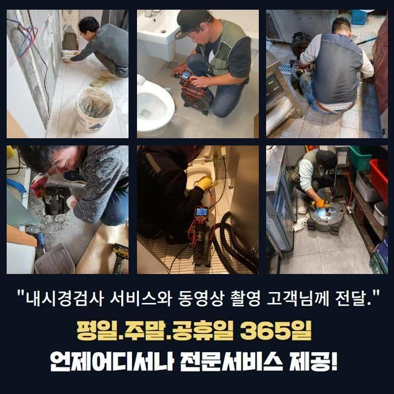
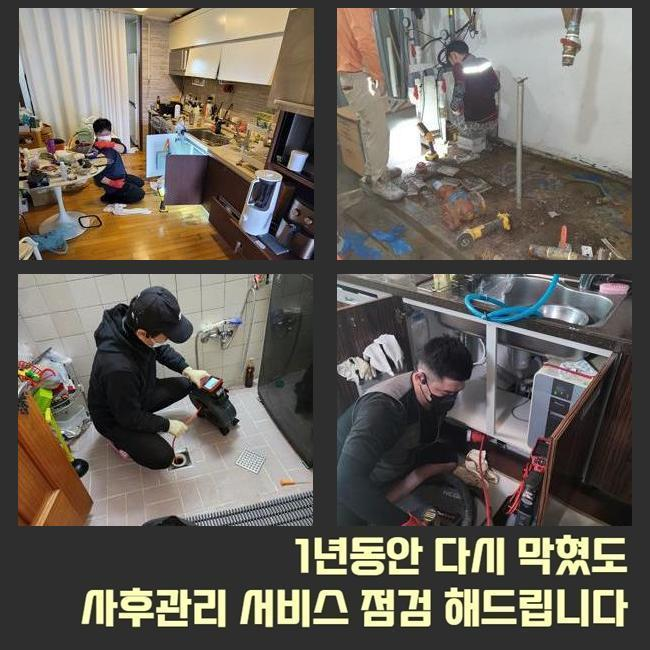
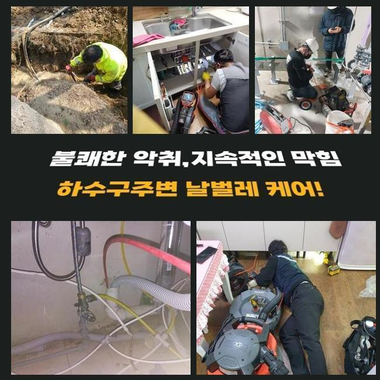

🏠 구로구 구로동싱크대막힘 오류동 배관뚫기 누수탐지
용인 싱크대막힘 전문 시공 후기

📋 작업 개요
- 위치: 용인
- 서비스 유형: 싱크대막힘, 하수구막힘, 배관막힘, 누수수리, 역류해결, 뚫는업체, 배관청소, 고압세척
- 작업 일시: 2024. 11. 30. 21:03
- 업체명: 하수구수사대 (010-5615-2118)
🔍 문제 상황
구로구 구로동싱크대막힘 오류동 배관뚫기 누수탐지
배수시설에 이상들이 야기되어 정체가 걷잡을 수 없단 연락으로 배수관의 진단을 실시하기 위하여 서둘러 내방했죠
하수시스템은 단순하게 해결되지 않고 역류한다던지 악취가 생겨난 등의 부차적인 현상으로 심화될 확률들이 높으므로 원활한 처리가 필요합니다
이러한 결함들을 인지하셨을 땐 이왕이면 대응을 취해주는게 중요한데요
또한 배수시설은 적절한 조치가 없다면 문제가 확대되는 기간도 빨라지기에 선제적인 대처가 중요시 되는겁니다
지금부터 통수의 필요성과 파생된 문제들이 목격되었을 시 어떠한 방식으로 헤쳐나가는게 제대로 된 해결책인지 저희업체가 방문드렸던 현장내용을 토대로 설명드리겠습니다
고객의 의뢰로 저희들이 달려간 장소는 구분건물로서 각 가지각 관로가 메인관로를 공유했던 구조였는데요
막혀버리는 바람에 라인 별로 동시다발적인 증상들이 수면 위로 떠올랐고 더 나아가 하단세대는 수도를 이용하지 못하게끔 증상들이 중한 상황이였어요

🔎 원인 분석
💡 전문가 진단: 정밀 진단 장비를 사용하여 슬러지의 고착 여부를 판명하고 타격/세척 작업을 실시했습니다.
저희전문진은 문제들을 막고자 가용되어야할 기기를 마련한 뒤 헐레벌떡 고객님이 계신 곳에 내방드렸는데요
평소 통수오류의 경우 여러 스팟에서 발생될 확률이 높아요
전 가구가 중앙라인을 통하기때문에 범위를 기준으로 막히게 될 경우 여러 세대에게 악영향들을 미칩니다
이럴 때 시기적절한 수습이 진행되지 않는다면 관련증세는 심화되어 예기치못한 문제들을 입히게되요
배수장애의 원인이라 함은 구간별로 쌓여진 기름때에요
일상 중에 흐르는 오수엔 용해되지 못하는 이물들이 있는데요
예로 기름들과 음식잔해는 녹질않기에 배수관에서 미량씩 누적되죠
오염원들이 어느 부위에 축적될 시 유수의 배출을 못하게하면서 여러 문제들이 생겨나게되요
이러한 문제가 분명함을 늦추려면 거름망들을 새롭게 들여놓거나 정기적으로 클린용액을 써주어 관리해보시는 것을 추천드려요

🔧 작업 과정
막힘들이 목격되었을 시 안전한 것은 전문가들의 조언에 따르는 것입니다
그렇지만 비용 등으로 대부분의 고객님들은 주위에 존재하는 용품들로 해결들을 해보시는 사례들이 많은데요
이에 해당하는 방법의 경우 단기간의 방법들에 불과하고 더나아가 잔여물질을 수직배관 끝까지 흐르게 해 균열들이 생길 수 있다는 사실이겠습니다
그래서 해당 방법들은 문제의 증상을 수렁으로 빠트리니 신중함이 필요하겠습니다
저희의 전문가는 문제가 분명함을 근본적으로 파헤치기 위해 내시경장치를 사용한 후 하수관을 여기저기 검사해봐요
내시경장치는 하수관을 보여주는 장비로서 바깥에서 진찰이 안되는 내부 구조 파악 및 오염물의 형태등을 어렵지않게 알 수 있죠
이번 고객님이 계신 곳에서는 메인배수관과 함께 넓은 범위에 해당 오염물이 쌓여있던 것으로 보여졌습니다
보통는 전동 스프링기라던지 샤프트장비를 이용하여 잔해들을 없애주지만 오늘처럼 범위별로 막혀버린 상황이라면 고압노즐분사가 필요합니다
고압노즐 방식은 적당한 노즐들을 선택하여 물의 압력으로 하수도를 깨끗히하는 방식인데요
해당 과정은 단단히 굳어진 잔여물질을 조속히 청소가 가능하게끔 하고 하수도가 계속해서 막힌 상태일 시 유용하게 쓰이죠
허나 하수관의 노후도와 연관하여 고압의 물줄기들이 목표인 하수관에 균열을 발생시키기도 하므로 노후된 정도를 진단해보고 세척해야하는 구간에 따라서 수압을 조정해주는 것이 우선되겠습니다
고압수청소를 지속한다면 지금껏 누적된 이물들이 제거되는것을 볼 수 있죠
이물제거가 완료되면 관로를 내시경장비로 확인하면 처음의 모습과는 다르게 배관의 내측이 확연히 다르다는걸 관찰하게 됩니다
이처럼 장비들을 사용해주면 하수구 해당 상황들을 수월히 해결하게됩니다


✅ 작업 완료
저희전문진은 고객님들이 물이 안빠져 난처한 상황에 빠지셨다면 조속하게 파헤치기 위해 언제라도 내방할 수 있어요
증상을 인지하셨다면 방치하지 마시고 전화하시면 서둘러 도와드릴게요
물빠짐에 이상이 생겨 인한 피해들을 막고자서는 주기성을 갖춘 관리의 실시가 가장 중요하답니다
이용하시면서 신경써주시는 방법들로 막히게되는 문제들이 나타날 수 없게끔 예방해주시는 것이 올바르다고 할 수 있겠습니다



⚠️ 베란다 누수 및 방수 관리 방법
- ✅ 비가 많이 올 때 창틀 주변이나 아래층 천장에 얼룩이 생기는지 정기적으로 확인해 보세요.
- ✅ 우수관 주변 실리콘 마감이 들뜨거나 깨진 틈새가 있는지 손상 여부를 수시로 체크하세요.
- ✅ 베란다 바닥 타일의 줄눈(메지)이 소실되면 그 틈으로 물이 침투하여 누수가 유발됩니다.
- ✅ 누수 의심 증상 발견 시 방치하면 아래층 손실이 커지므로 즉시 전문가의 진단을 받으십시오.
💡 핵심 정리
- 확실한 장비 작업(내시경 점검 및 샤프트 스케일링)으로 원인을 뿌리 뽑습니다.
- 작업 후 1년 이내에 동일한 부위 재발 시 100% 무상 A/S 서비스를 보장합니다.
- 서울 · 경기 · 인천 전 지역에 24시간 언제든 긴급 출동할 수 있도록 항시 대기 중입니다.
❓ 자주 묻는 질문 (FAQ)
🚨 용인 싱크대막힘 문제로 고민이신가요?
정확한 원인 진단과 확실한 시공으로 재발 없는 해결을 약속드립니다.
24시간 긴급 출동 | 서울 · 경기 · 인천 전지역 | 1년 내 재발 시 무상 A/S